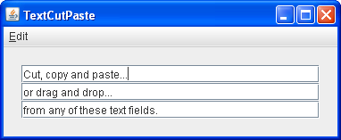

Lección: Arrastrar y Soltar y Transferencia de Datos
CCP en un Componente de Texto
Si está implementando el cortado, copiado y pegado usando uno de los componentes de texto de Swing (campo de
texto, campo de password, campo de texto formateado, o área de texto) su trabajo es muy sencillo. Estos
componentes de texto utilizan el
DefaultEditorKit el cual proporciona acciones integradas para cortar, copiar y pegar. El
kit del editor por defecto también maneja el trabajo de recordar qué último componente ha tenido el foco.
Esto significa que si el usuario inicia una de estas acciones usando el menú o un equivalente de teclado,
el componente correcto recibe la acción — no se requiere código adicional.
La demostración siguiente, TextCutPaste, contiene tres campos de texto. Como puede ver en la
captura de pantalla, puede cortar, copiar, y pegar a o desde cualquiera de estos campos de texto. También
soportan arrastrar y soltar.

Intente esto:
-
Pulse el botón Lanzar para ejecutar
TextCutPasteusando Java™ Web Start ( descargue KDJ 7 o posterior). Alternativamente, para compilar y ejecutar el ejemplo por sí mismo, consulte el índice de ejemplos.
- Seleccione texto en uno de los campos de texto. Use el menú Edit o el equivalente del teclado para cortar o copiar el texto desde la fuente.
- Coloque el símbolo de intercalación donde desee que se pegue el texto.
- Pegue el texto usando el menú o el equivalente del teclado.
- Ejecute la misma operación usando arrastrar y soltar.
Aquí está el código que crea el menú Edit al conectar las acciones integradas de cortar, copiar y pegar
definidas en DefaultEditorKit a los elementos del menú. Esto funciona con cualquier componente que
descienda de JComponent:
/**
* Create an Edit menu to support cut/copy/paste.
*/
public JMenuBar createMenuBar () {
JMenuItem menuItem = null;
JMenuBar menuBar = new JMenuBar();
JMenu mainMenu = new JMenu("Edit");
mainMenu.setMnemonic(KeyEvent.VK_E);
menuItem = new JMenuItem(new DefaultEditorKit.CutAction());
menuItem.setText("Cut");
menuItem.setMnemonic(KeyEvent.VK_T);
mainMenu.add(menuItem);
menuItem = new JMenuItem(new DefaultEditorKit.CopyAction());
menuItem.setText("Copy");
menuItem.setMnemonic(KeyEvent.VK_C);
mainMenu.add(menuItem);
menuItem = new JMenuItem(new DefaultEditorKit.PasteAction());
menuItem.setText("Paste");
menuItem.setMnemonic(KeyEvent.VK_P);
mainMenu.add(menuItem);
menuBar.add(mainMenu);
return menuBar;
}
A continuación veremos como lograr la misma funcionalidad usando un componente que no tiene el soporte
integrado de DefaultEditorKit.